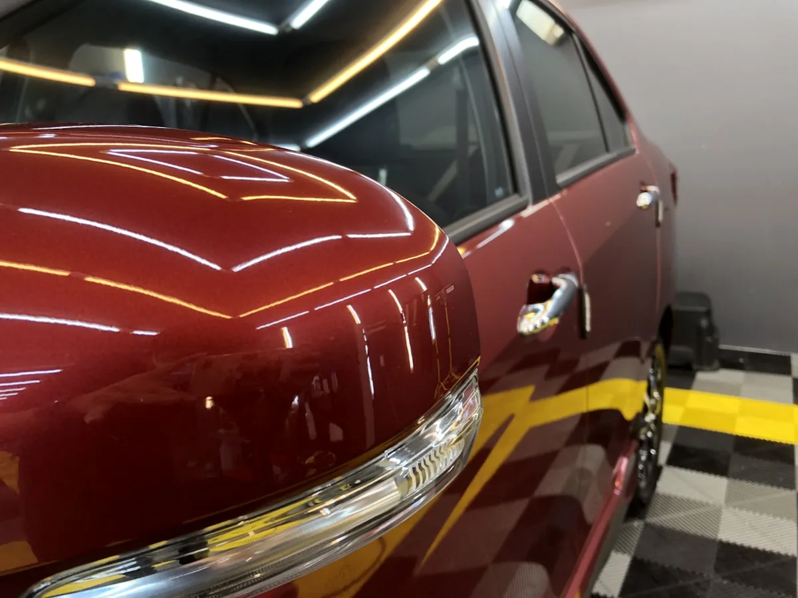
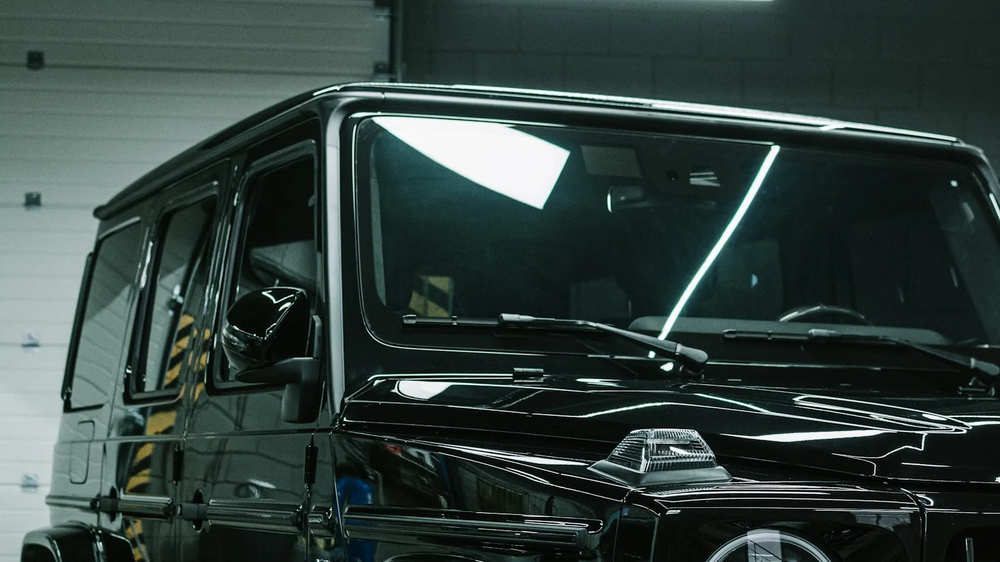
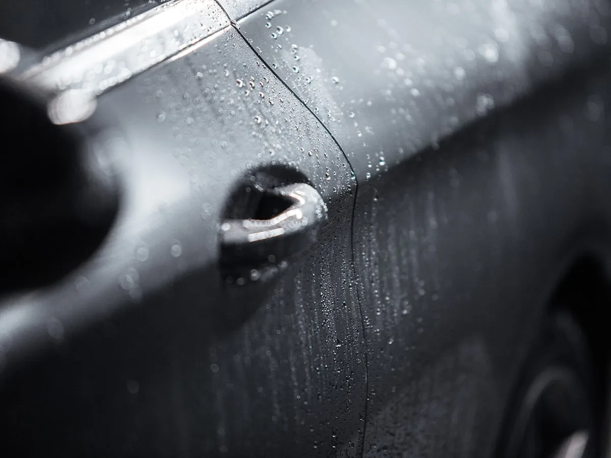

Brilho profundo
A cor fica mais viva e a superfície reflete como espelho, não como um carro só lavado.
O acabamento premium que dá um brilho profundo e proteção duradoura à pintura do seu carro — feito com produtos Vonixx, referência em cuidado automotivo no Brasil.

A cera líquida Vonixx é desenvolvida com ceras de carnaúba e agentes de última geração, combinando alta profundidade de brilho com facilidade de aplicação. Depois da lavagem completa do veículo, aplicamos o produto sobre a pintura e finalizamos com pano de microfibra, realçando a cor e deixando a superfície com um toque aveludado.
É isso que a cera Vonixx faz na pintura: profundidade de brilho, reflexo limpo e água que escorre em gotas em vez de manchar.

A cor fica mais viva e a superfície reflete como espelho, não como um carro só lavado.

A chuva vira gota e escorre sozinha, levando poeira junto. O carro fica limpo por mais tempo.

Produto passado sobre a pintura e finalizado com microfibra, sem abrasivo e sem pressa.
Aplicação da cera líquida Vonixx após a lavagem, com preço conforme o porte do veículo.
R$50
Hatch, sedã compacto e similares.
R$80
SUV, picape, van e similares.
Para o resultado mais completo, combine o Vonixx com a nossa Lavagem geral: carro limpo por dentro e por fora, e ainda protegido com o brilho premium.